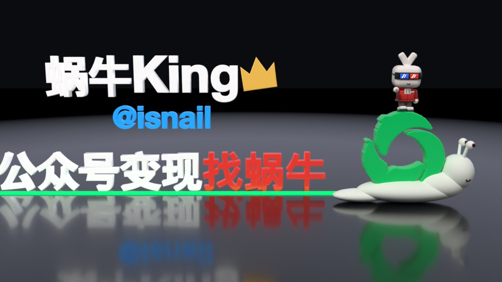

蜗牛King
@isnail
公众号变现找蜗牛
蜗牛King
@isnail
公众号变现找蜗牛
目標：結尾嗰幾行字一眼睇得清、睇完記得個名。下面先講點解而家難睇，再列網上搵到嘅做法，然後用真字體即場排出 4 種字款，疊喺真結尾畫面上畀你比較。呢頁淨係參考，未郁條片。

立體字嘅側面要用深一級嘅顏色，或者同字面成對比，否則一擠出厚度就變粗變糊。
EffectX 3D 教學、LibreOffice 3D 字問題、Adobe 論壇
白字黑邊、黃字黑邊喺任何背景都清楚；淺灰底配淺色字最傷眼。
Checksub、OpusClip 字幕設計
螢幕上用粗身無襯線字最易讀；同一條片字體、顏色保持一致，只喺要強調嘅字先轉色。
OpusClip、BlitzCut
如果做充氣字，光源要固定喺一邊，背光面深一級，頂邊加一條細白高光，先有光滑塑膠感。
Framer 3D Bubble Text、Adobe Stock 氣球字例子
以下全部係真字體即場排版，疊喺結尾真畫面（拎走咗字）上面。正式做會照揀咗嘅方向起 3D 字。前 3 款用全黑背景，因為研究建議字後面要深色；第 1 款另外附一張灰地板版本對比。
有預覽嘅係 Google Fonts 上面有嘅版本，其餘要正式用時先下載。授權以各字體官網最新條款為準。
| 字體 | 風格 | 授權（據來源） | 預覽 |
|---|---|---|---|
| 思源黑體 Heavy（Noto Sans SC） | 標準超粗黑體，最穩陣 | SIL OFL，可商用 | 蜗牛King 公众号变现找蜗牛 |
| 站酷快樂體 | 圓潤、可愛 | 免費商用 | 蜗牛King 公众号变现找蜗牛 |
| 站酷慶科黃油體 | 粗身、有個性 | 免費商用 | 蜗牛King 公众号变现找蜗牛 |
| 阿里巴巴普惠體 3.0 | 9 個字重，Heavy 夠粗 | 免費商用，要喺官網下載 | 無線上預覽 |
| HarmonyOS Sans SC | 到 Black 字重，乾淨 | 華為稱免費商用 | 無線上預覽 |
| MiSans | 10 個字重，Heavy | 小米稱免費商用 | 無線上預覽 |
| 得意黑 Smiley Sans | 窄身斜體，型格 | SIL OFL 1.1 | 無線上預覽 |
| 優設標題黑 | 粗壯標題字，似封面 | 媒體轉述可免費商用 | 無線上預覽 |
| 庞门正道标题体 | 粗壯標題字 | 作者表示免費商用 | 無線上預覽 |
| 抖音美好體 | 抖音品牌字 | 標明免費商用 | 無線上預覽 |